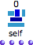
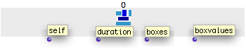
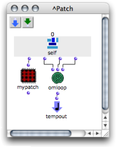
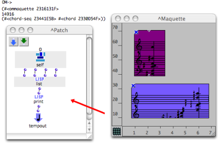

OpenMusic DocumentationHiérarchie de section : OM 6.6 User Manual > Maquettes > Maquette Programming > The Synthesis Patch > Maquette Value
OpenMusic DocumentationHiérarchie de section : OM 6.6 User Manual > Maquettes > Maquette Programming > The Synthesis Patch > Maquette Value
Navigation : page précédente | page suivante
Attention, votre navigateur ne supporte pas le javascript ou celui-ci à été désactivé. Certaines fonctionnalités de ce guide sont restreintes.
Calculating the Value of a Maquette
A synthesis patch is like a standard patch. It produces a value from the content of a maquette.
To access this content, a Maquette Self Input :  must be added in the patch.
The patch can then manipulate this content.
The result of the computation is attributed to the maquette via the Tempout  of the patch.
of the patch.
The Maquette Self Input
Parameters

The Maquette Self Input returns the maquette's content. It can be used as a patch input . The Maquette Self Input returns:
the maquette's value itself,
the duration of the maquette,
the list of boxes contained in the maquette,
the list each box's value contained in the maquette.
The Synthesis Patch
Creating and Implementing the Patch

You can now manipulate the data returned by the Maquette Self Input with the program you will design in the synthesis patch. The maquette's value will be that of the object connected to the Tempout of the synthesis patch . |

|
Evaluation Program
The resulting synthesis patch actually is the evaluation program, or evaluation tool of the maquette. When the maquette is evaluated, the Maquette Self Input of the synthesis patch is updated, and the synthesis patch is evaluated too.
Accessing the Results of a Synthesis Patch ?
The result of a synthesis patch is computed when the maquette is evaluated . The information produced is returned to other boxes only for subsequent computation : the Self Input box must be considered a virtual storage box. Consequently, information won't be displayed in the Listener, unless a specific function, like print, is resorted to.

This synthesis patch prints the list returned by the Maquette Self Input : its reference, duration, TemporalBoxes references, and the objects contained in the TemporalBoxes.
Assigning a Synthesis Patch via a Maquette Input
Internal Patches / Synthesis Patch
Modifying an internal patch doesn't affect the other references of the patch, including the patch that was dropped in the corner of the maquette. Out of security, we advise you to make a copy of the last version of this internal patch.
Références :
Plan :
Navigation : page précédente | page suivante
A propos...(c) Ircam - Centre Pompidou